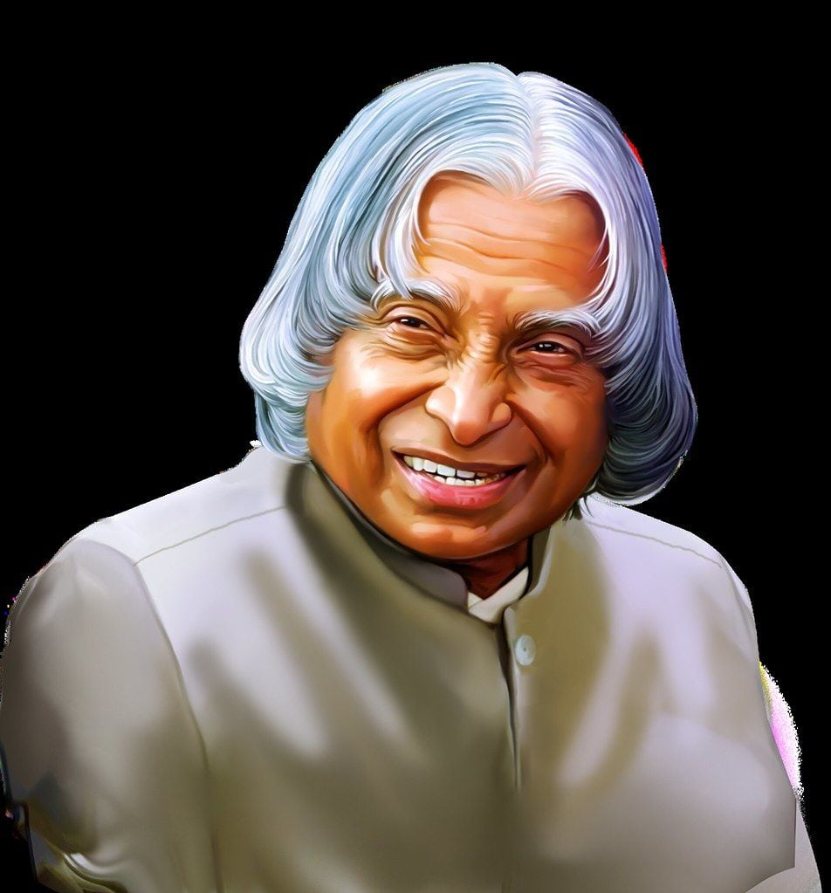

A. P. J. Abdul Kalam

Biography
A. P. J. Abdul Kalam Official portrait, 2002 11th President of India In office 25 July 2002 – 25 July 2007 Prime Minister Atal Bihari Vajpayee
Manmohan Singh Vice President Krishan Kant Bhairon Singh Shekhawat Preceded by K. R. Narayanan Succeeded by Pratibha Patil 1st Principal Scientific Adviser to the Government of India In office November 1999 – November 2001 President K. R.
Narayanan Prime Minister Atal Bihari Vajpayee Preceded by Office established Succeeded by Rajagopala Chidambaram Personal details Born 15 October 1931 Rameswaram, Ramanathapuram district,Tamil Nadu) Died 27 July 2015 (aged 83) Shillong, Meghalaya,
India Resting place Dr. A. P. J. Abdul Kalam Desiya Ninaivagam, Pei Karumbu, Rameswaram, Tamil Nadu, India Political party Independent[fn 1] Alma mater St. Joseph's College, Tiruchirappalli (BEng) Madras Institute of Technology (MEng) Profession
Aerospace ScientistAuthor Awards Full list Notable work(s) Wings of Fire India 2020 Ignited Minds Indomitable Spirit Transcendence: My Spiritual Experiences with Pramukh Swamiji Signature Website Official Website Scientific career Fields Aerospace
engineering Institutions Defence Research and Development Organisation Indian Space Research Organisation This article is part of a series about A. P. J. Abdul Kalam President of India (2002-2007) Awards and honours Eponym World Students'
Day Presidential election 2002 Books and publications Wings of Fire India 2020 Ignited Minds Target 3 Billion Transcendence: My Spiritual Experiences with Pramukh Swamiji Indomitable Spirit Associated projects Polar Satellite Launch Vehicle
Project Devil Project Valiant Smiling Buddha Pokhran-II Gallery: Picture, Sound, Video vte He was born and raised in Rameswaram, Tamil Nadu and studied physics and aerospace engineering. He spent the next four decades as a scientist and science
administrator, mainly at the Defence Research and Development Organisation (DRDO) and Indian Space Research Organisation (ISRO) and was intimately involved in India's civilian space programme and military missile development efforts.
Early Life & Education
Avul Pakir Jainulabdeen Abdul Kalam was born on 15 October 1931, to a Tamil Muslim family in the pilgrimage centre of Rameswaram on Pamban Island, then in the Madras Presidency
and now in the State of Tamil Nadu. His father Jainulabdeen Marakayar was a boat owner and imam of a local mosque;[9] his mother Ashiamma was a housewife.[10][11][12][13] His father owned a ferry that took Hindu pilgrims back and forth
between Rameswaram and the now uninhabited Dhanushkodi.[14][15] Kalam was the youngest of four brothers and one sister in his family.[16][17][18] His ancestors had been wealthy Marakayar traders and landowners, with numerous properties
and large tracts of land. Marakayar are a Muslim ethnic group found in coastal Tamil Nadu and Sri Lanka who claim descent from Arab traders and local women. The family business had involved trading groceries between the mainland and the
island and to and from Sri Lanka, as well as ferrying pilgrims between the mainland and Pamban. With the opening of the Pamban Bridge to the mainland in 1914, however, the businesses failed and the family fortune and properties were lost
by the 1920s, apart from the ancestral home. The family was poverty-stricken by the time Kalam was born. As a young boy he had to sell newspapers to add to the family's meager income.
Awards
- 1981 Padma Bhushan Government of India
- 1990 Padma Vibhushan Government of India
- 1994 Distinguished Fellow Institute of Directors (India)
- 1995 Honorary Fellow National Academy of Medical Sciences,
- 1997 Bharat Ratna President of India
- 1997 Indira Gandhi Award for National Integration Indian National Congress
- 1998 Veer Savarkar Award Government of India[
- 2000 Ramanujan Award Alwars Research Centre, Chennai